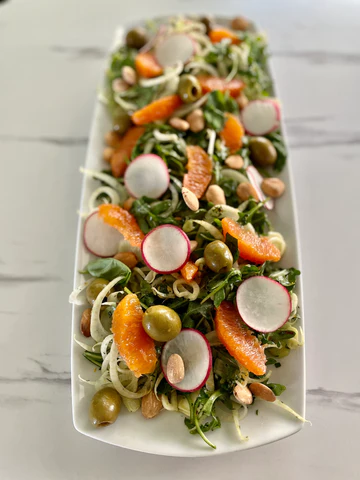

Fenele & Oragne Salad With Herby Dressing

Ingredients
- 3 tablespoons extra-virgin olive oil
- 2 tablespoons fresh cara-cara orange juice
1 tablespoon freshly grated orange zest
1 tablespoon Marshall’s Haute Sauce, Bird’s Eye Basil
1 tablespoon minced fresh parsle
1 tablespoon minced fresh cilantro
½ teaspoon local honey
½ teaspoon kosher salt
¼ teaspoon freshly ground pepper
Salad:
4 cups arugula
1 large fennel bulb (or three small), thinly sliced
2 cara-cara oranges, segmented
2 radishes, thinly sliced
½ cup salted Marcona almonds
¼ cup Castelvetrano pitted olives
¼ cup torn fresh basil
Instructions
- 1. Zest the lemon. Pour the juice over the minced garlic. Boil rice vinegar, water and salt, pour over dulse, let stand 5 minutes. Finely chop dulse, mix lemon zest, herbs, garlic mixture, olive oil, and dulse.
- 2. Season the Halibut fillets with salt on both sides. In a large skillet, heat coconut oil over medium heat; place the Halibut skin side up into the hot coconut oil. Let cook 3-4 minutes until golden, flip.
- 3. Add the Serrano Ginger Lemongrass sauce and coconut milk and bring to a boil. Reduce heat to medium low; cook until fish flakes easily when tested, about four minutes. Remove skin. Transfer fish to plate and keep warm.
- 4. Simmer sauce until thick enough to coat the back of a spoon, about 5-7 minutes. Stir in lime juice, and salt. Ladle over fish. Top fish with Gremolata and serve over steamed rice.